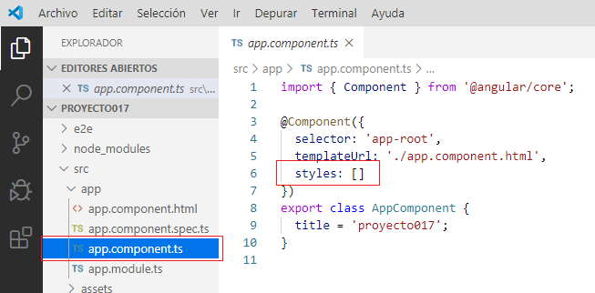
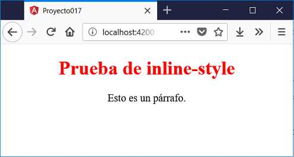
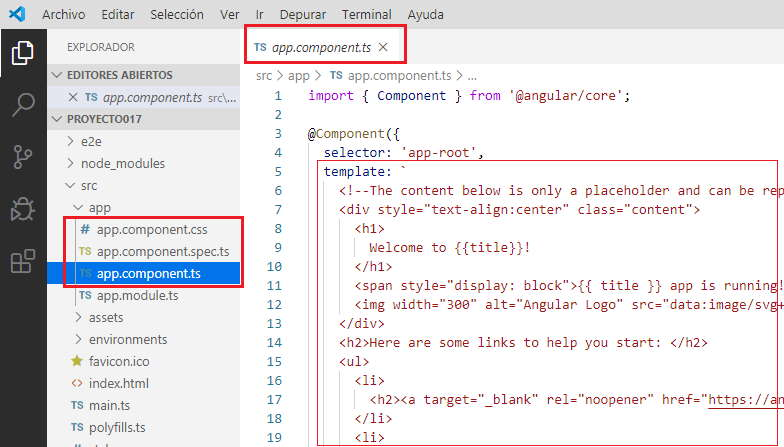
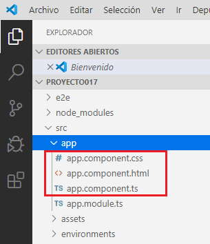
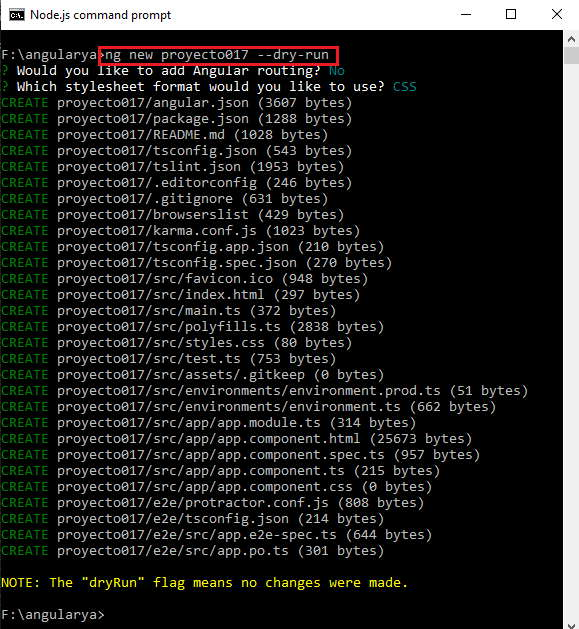

31 - Herramienta Angular CLI - comando: ng new
Hemos visto que con el comando 'new' de la herramienta Angular CLI se crea un esqueleto de una aplicación Angular:
ng new proyecto017
Durante la generación del proyecto se nos consulta si queremos disponer rutas y el tipo de archivos para las hojas de estilo.
El comando new podemos pasar otros parámetros para adaptar la aplicación generada.
- Si necesitamos administrar rutas en nuestra aplicación podemos crearla con la siguiente sintaxis (luego no se nos consulta en la generación del proyecto):
ng new proyecto017 --routing
Se crea el archivo 'app-routing.module.ts' donde debemos configurar las rutas, tema visto anteriormente.
-
Podemos especificar el prefijo a los selectores generados mediante el parámetro --prefix:
ng new proyecto017 --prefix ele
Luego se crea con prefijo 'ele' en lugar del valor por defecto 'app':
Si abrimos la componente creada por defecto podemos ver que el prefijo es 'ele':
@Component({ selector: 'ele-root', templateUrl: './app.component.html', styleUrls: ['./app.component.css'] })En lugar de 'app':
@Component({ selector: 'app-root', templateUrl: './app.component.html', styleUrls: ['./app.component.css'] })Luego si creamos una componente dentro del proyecto también se respetará el prefijo definido en la creación del proyecto:
ng generate component dado
El selector de la componente dado queda con el siguiente nombre:
@Component({ selector: 'ele-dado', templateUrl: './dado.component.html', styleUrls: ['./dado.component.css'] })La definición de prefijos en las componentes de Angular permiten diferenciar las etiquetas nativas del navegador (ej. 'button') con las etiquetas propias de Angular (ej. ele-button)
Al crearse un proyecto uno de los archivos fundamentales que almacenan datos de configuración del mismo es 'angular.json' (se encuentra en la carpeta raíz del proyecto)
En el archivo 'angular.json' se encuentra almacenado el prefijo definido al crearse el proyecto:

Si queremos escribir menos con Angular CLI al crear el proyecto podemos utilizar el alias -p en lugar de --prefix:
ng new proyecto017 -p ele
Mediante el parámetro --inline-style (alias: -s) podemos evitar que se cree el archivo *.css y la definición de los estilos se deba hacer directamente en el archivo *.ts:
ng new proyecto017 --inline-style
Con esto no se crearán los archivos *.css para las componentes. El archivo *.ts de la componente tienen un lugar donde definir los estilos:

Puede tener sentido si la componente es bastante sencilla y no requiere la definición de una hoja de estilo compleja.
Probar modificar los archivos *.ts y *.html de la componente del proyecto.
app.component.ts
import { Component } from '@angular/core'; @Component({ selector: 'app-root', templateUrl: './app.component.html', styles: ['.titulo { color:red; font-size:2rem }', '.parrafo {color:black; font-size:1.1rem }'] }) export class AppComponent { tit = 'Prueba de inline-style'; }app.component.html
<div style="text-align:center"> <h1 class="titulo">{{tit}}</h1> <p class="parrafo">Esto es un párrafo.</p> </div>Si ejecutamos el proyecto podemos ver que los estilos se están recuperando del archivo *.ts:

Mediante el parámetro --inline-template (alias: -s) podemos evitar que se cree el archivo *.html y la definición del HTML se hace directamente en el archivo *.ts (borre primero el proyecto017 antes de crearlo nuevamente con esta nueva configuración):
ng new proyecto017 --inline-template
Con este parámetro estamos indicando que no se cree el archivo *.html para la componente y la definición del HTML se haga en el mismo archivo *.js
Luego de creado el proyecto solo se han creado los archivos *.css y *.ts:

Nuevamente decimos que esto tiene sentido si la complejidad de la componente Angular no es grande.
Podemos inclusive evitar que se creen tanto el archivo *.css y *.html indicando ambos parámetros al crear la componente:
ng new proyecto017 --inline-style --inline-template
-
Si tratamos de crear un proyecto y ya existe uno en la carpeta actual se produce un error al ejecutar:
ng new proyecto017
Si queremos forzar la creación del proyecto y sobreescribir los archivos actuales debemos añadir el parámetro --force (alias -f):
ng new proyecto017 --force
-
Si por algún motivo no queremos que Angular.CLI nos genere el archivo de test debemos pasar el parámetro --skip-tests (alias -s):
ng new proyecto017 --skip-tests

Como podemos comprobar no se ha generado el archivo 'app.component.spec.ts'.
-
Otro parámetro más que podemos utilizar cuando vamos a crear un proyecto es --dry-run (alias: -d)
Mediante esta opción Angular CLI nos informa que archivos se crearán (no los crea) y a partir de estos datos poder tomar la decisión de crear o no el proyecto:
ng new proyecto017 --dry-run
